<title>Designs That Ship</title>
<link rel="preconnect" href="https://fonts.googleapis.com">
<link rel="preconnect" href="https://fonts.gstatic.com" crossorigin>
<link rel="stylesheet" href="https://fonts.googleapis.com/css2?family=JetBrains+Mono:wght@400;500;700&family=VT323&family=Press+Start+2P&family=Space+Grotesk:wght@500;700&family=Noto+Sans+Thai+Looped:wght@400;500;700&family=Sriracha&display=swap">
<style>
/* Layout: a cartoon game cartridge printed on the same warm grid paper. HUD strip, title card, stage-select grid, then one chunky ink-outlined card per stage; each stage keeps its own accent and tint */
:root {
  color-scheme: light;
  --bg: #F3F0E8; --fg: #111111; --panel: #FFFFFF;
  --dim: rgba(17,17,17,.6); --muted: rgba(17,17,17,.74); --line: rgba(17,17,17,.28);
  --grid: rgba(0,0,0,.06);
  --accent: #F5BE5B; --accent-text: #8A5A00; --tint: #F3F0E8;
  --ink: 3px solid var(--fg); --pop: 6px 6px 0 var(--fg); --pop-s: 4px 4px 0 var(--fg);
  --mono: "JetBrains Mono", "Noto Sans Thai Looped", ui-monospace, monospace;
  --pixel: "Press Start 2P", "JetBrains Mono", "Noto Sans Thai Looped", monospace;
  --crt: "VT323", "Noto Sans Thai Looped", "JetBrains Mono", monospace;
  --sans: "Space Grotesk", "Noto Sans Thai Looped", system-ui, sans-serif;
  --hand: "Sriracha", "Noto Sans Thai Looped", cursive;
}
* { box-sizing: border-box; }
body {
  margin: 0; background: var(--bg); color: var(--fg);
  font: 15.5px/1.75 var(--sans);
  background-image: linear-gradient(var(--grid) 1px, transparent 1px), linear-gradient(90deg, var(--grid) 1px, transparent 1px);
  background-size: 24px 24px;
}
.wrap { max-width: 1060px; margin: 0 auto; padding-inline: 20px; padding-block: 28px 80px; display: grid; gap: 40px; }
.eyebrow { font: 400 10px/1.6 var(--pixel); letter-spacing: .06em; text-transform: uppercase; color: var(--accent-text); }
h1, h2, h3 { font-family: var(--sans); text-wrap: balance; margin: 0; font-weight: 700; }
h1 { font-size: clamp(2.2rem, 5.6vw, 4rem); line-height: 1.12; letter-spacing: -.01em; }
h2 { font-size: clamp(1.45rem, 3vw, 2.05rem); line-height: 1.2; }
h3 { font-size: 1rem; line-height: 1.35; }
p { margin: 0; }
.lede { color: var(--muted); font-size: 1.05rem; max-width: 64ch; }
.cursor { display: inline-block; width: .55em; height: 1em; background: var(--fg); vertical-align: -.12em; animation: blink 1s step-end infinite; }
@keyframes blink { 50% { opacity: 0; } }

/* HUD: hearts, counters, XP bar */
.hud { display: flex; flex-wrap: wrap; align-items: center; gap: 10px 18px; padding: 10px 16px; background: var(--fg); color: #F3F0E8; border-radius: 14px; box-shadow: 0 6px 0 rgba(17,17,17,.18); font: 400 10px/1 var(--pixel); letter-spacing: .04em; }
.hud-p { color: #F5BE5B; }
.hearts { display: inline-flex; gap: 5px; }
.hearts i { width: 14px; height: 13px; background: #FF4F8B; clip-path: polygon(0 20%,15% 0,35% 0,50% 18%,65% 0,85% 0,100% 20%,100% 45%,50% 100%,0 45%); }
.xp { flex: 1 1 120px; height: 12px; border: 2px solid #F3F0E8; border-radius: 99px; overflow: hidden; min-width: 100px; }
.xp b { display: block; height: 100%; width: 86%; background: repeating-linear-gradient(90deg, #2EC27E 0 10px, #26A86C 10px 20px); animation: fill 1.6s cubic-bezier(.2,.9,.3,1.2) both; }
@keyframes fill { from { width: 0; } }

/* cartoon card chrome: thick ink outline, rounded, hard offset shadow; the window title bar keeps the site's terminal feel */
.title-card, .card { position: relative; background: var(--tint); border: var(--ink); border-radius: 20px; box-shadow: var(--pop); overflow: hidden; scroll-margin-top: 16px; }
.bar { display: flex; align-items: center; gap: 7px; padding: 10px 16px; border-bottom: var(--ink); background: var(--accent); font: 700 12px/1 var(--mono); color: var(--fg); }
.bar i { width: 12px; height: 12px; border-radius: 50%; border: 2px solid var(--fg); background: var(--panel); flex: none; }
.bar i:nth-child(2) { background: #F5BE5B; } .bar i:nth-child(3) { background: #FF4F8B; }
.bar span:first-of-type { margin-left: 6px; }
.bar span:last-child { margin-left: auto; }
.clear { font: 400 9px/1 var(--pixel); background: var(--fg); color: var(--panel); padding: 6px 8px; border-radius: 6px; }

.title-card { background: var(--panel); }
.title-card .in { padding: 30px clamp(18px,4vw,44px) 34px; display: grid; gap: 16px; justify-items: start; position: relative; }
.title-card .in::after { content: "★"; position: absolute; right: clamp(14px,4vw,40px); top: 22px; font-size: 54px; line-height: 1; color: #F5BE5B; -webkit-text-stroke: 3px var(--fg); transform: rotate(12deg); animation: bob 2.4s ease-in-out infinite; }
@keyframes bob { 50% { transform: rotate(-6deg) translateY(-6px); } }
.badge { font: 400 10px/1 var(--pixel); text-transform: uppercase; letter-spacing: .06em; padding: 9px 12px; background: #F5BE5B; border: var(--ink); border-radius: 99px; box-shadow: 3px 3px 0 var(--fg); }
.prompt { font: 400 1.5rem/1.1 var(--crt); color: var(--dim); }
.prompt b { color: var(--fg); font-weight: 400; }
h1 .hl { background: linear-gradient(transparent 58%, #F5BE5B 58% 92%, transparent 92%); padding-inline: .06em; }
.press { font: 400 12px/1 var(--pixel); color: #FF4F8B; animation: blink 1.1s step-end infinite; }
.chips { display: flex; flex-wrap: wrap; gap: 8px; }
.chip { font: 700 12.5px/1 var(--mono); padding: 8px 12px; border: 2px solid var(--fg); border-radius: 99px; background: #F5BE5B; box-shadow: 2px 2px 0 var(--fg); }
.chip:nth-child(2) { background: #9B6BFF; color: #fff; } .chip:nth-child(3) { background: #2EC27E; } .chip:nth-child(4) { background: #FF7A3D; }
.chip.plain { background: var(--panel); color: var(--muted); box-shadow: none; border-color: var(--line); }

/* stage select: chunky numbered level buttons */
.index { display: grid; gap: 14px; }
.sel { color: var(--fg); text-align: center; }
.levels { display: grid; grid-template-columns: repeat(auto-fit, minmax(128px, 1fr)); gap: 12px; }
.levels a { display: grid; justify-items: center; gap: 8px; padding: 14px 8px 12px; text-decoration: none; color: var(--fg); background: var(--panel); border: var(--ink); border-radius: 16px; box-shadow: var(--pop-s); transition: transform .15s cubic-bezier(.3,1.6,.5,1), box-shadow .15s; }
.levels b { width: 44px; height: 44px; display: grid; place-items: center; font: 400 15px/1 var(--pixel); background: var(--accent); border: var(--ink); border-radius: 12px; }
.levels span { font: 700 12.5px/1.2 var(--mono); text-align: center; }
.levels a:hover, .levels a:focus-visible { transform: translate(-2px,-4px) rotate(-2deg); box-shadow: 6px 8px 0 var(--fg); outline: none; }
.levels a:active { transform: translate(3px,3px); box-shadow: 1px 1px 0 var(--fg); }

/* stage cards */
.case .in, .gallery .in { padding: 24px clamp(16px,3.5vw,32px) 28px; display: grid; gap: 20px; }
.case-head { display: grid; gap: 10px; justify-items: start; }
.stage { font: 400 11px/1 var(--pixel); padding: 8px 11px 7px; background: var(--fg); color: var(--accent); border-radius: 8px; transform: rotate(-2deg); box-shadow: 3px 3px 0 var(--accent); }
.meta { display: flex; flex-wrap: wrap; gap: 6px 18px; font: 400 13px/1.6 var(--mono); color: var(--muted); }
.meta b { font-weight: 700; color: var(--fg); }
.shots { display: grid; gap: 16px; }
.shots.two { grid-template-columns: 1.6fr 1fr; align-items: start; }
figure { margin: 0; display: grid; gap: 10px; min-width: 0; justify-items: start; }
figure img { width: 100%; height: auto; display: block; border: var(--ink); border-radius: 14px; background: var(--panel); box-shadow: var(--pop-s); transition: transform .2s cubic-bezier(.3,1.6,.5,1); }
figure:hover img { transform: rotate(-.6deg) scale(1.01); }
/* captions as little speech bubbles */
figcaption { position: relative; font: 400 15px/1.4 var(--hand); color: var(--fg); background: var(--panel); border: 2px solid var(--fg); border-radius: 12px; padding: 6px 12px; margin-left: 14px; }
figcaption::before { content: ""; position: absolute; left: 16px; top: -9px; width: 14px; height: 14px; background: var(--panel); border-left: 2px solid var(--fg); border-top: 2px solid var(--fg); transform: rotate(45deg); }
.cols { display: grid; grid-template-columns: repeat(auto-fit, minmax(260px, 1fr)); gap: 16px; }
.box { padding: 18px; display: grid; gap: 12px; align-content: start; min-width: 0; background: var(--panel); border: var(--ink); border-radius: 16px; box-shadow: var(--pop-s); }
.box h3 { display: flex; align-items: center; gap: 10px; font: 400 10px/1.6 var(--pixel); text-transform: uppercase; letter-spacing: .05em; color: var(--accent-text); }
.ico { flex: none; width: 26px; height: 26px; display: grid; place-items: center; font: 700 14px/1 var(--mono); color: var(--fg); background: var(--accent); border: 2px solid var(--fg); border-radius: 50%; }
.box ul { margin: 0; padding-left: 0; list-style: none; display: grid; gap: 8px; font-size: 15px; }
.box li { padding-left: 1.4em; position: relative; }
.box li::before { content: "▸"; position: absolute; left: 0; font-family: var(--mono); font-weight: 700; color: var(--accent-text); }
.tools { display: flex; flex-wrap: wrap; align-items: center; gap: 8px; }
.tools em { font: 400 9px/1 var(--pixel); font-style: normal; text-transform: uppercase; margin-right: 4px; }
.tools span { font: 700 12px/1 var(--mono); padding: 7px 10px; border: 2px solid var(--fg); border-radius: 8px; background: var(--panel); box-shadow: 2px 2px 0 var(--fg); }
.tools span::before { content: "◆ "; color: var(--accent-text); }

.group { display: grid; gap: 12px; }
.group > p { color: var(--muted); font-size: 15px; max-width: 70ch; }
.group h3 { font-size: 1.1rem; display: flex; align-items: center; gap: 10px; }
.group h3::before { content: ""; width: 16px; height: 16px; background: var(--accent); border: 2px solid var(--fg); transform: rotate(45deg); flex: none; }
.tiles { display: grid; grid-template-columns: repeat(auto-fill, minmax(220px, 1fr)); gap: 18px; align-items: start; }
.tiles figure.wide { grid-column: span 2; }

.note { font: 400 13px/1.6 var(--mono); color: var(--muted); background: var(--panel); border: 2px dashed var(--fg); border-radius: 14px; padding: 12px 16px; }
footer { display: grid; justify-items: center; gap: 12px; font: 400 1.25rem/1 var(--crt); color: var(--dim); text-align: center; }
.go { font: 400 clamp(14px,2.6vw,20px)/1.4 var(--pixel); color: #F5BE5B; -webkit-text-stroke: 1px var(--fg); text-shadow: 3px 3px 0 var(--fg); }

@media (max-width: 720px) {
  .wrap { padding-inline: 16px; padding-block: 16px 56px; gap: 32px; }
  .shots.two { grid-template-columns: 1fr; }
  .title-card .in::after { font-size: 36px; }
  .levels { grid-template-columns: repeat(auto-fit, minmax(96px, 1fr)); }
}
@media (max-width: 520px) { .tiles figure.wide { grid-column: auto; } .bar span:first-of-type { overflow: hidden; text-overflow: ellipsis; white-space: nowrap; } }
@media (prefers-reduced-motion: reduce) { *, *::before, *::after { animation: none !important; transition: none !important; } }
</style>

<main class="wrap">
  <div class="hud" aria-hidden="true">
    <span class="hud-p">P1 · DESIGNER</span>
    <span class="hearts"><i></i><i></i><i></i></span>
    <span class="hud-s">★ 6 STAGES</span>
    <span class="hud-s">◆ 15 LOOT</span>
    <span class="xp"><b></b></span>
  </div>

  <header class="title-card">
    <div class="bar"><i></i><i></i><i></i><span>design_portfolio.exe</span><span>ywc21</span></div>
    <div class="in">
      <span class="badge">★ Design Portfolio ★</span>
      <p class="prompt">&gt; <b>ls ./projects</b> <span class="cursor" aria-hidden="true"></span></p>
      <h1>ออกแบบจาก<span class="hl">คนที่ใช้</span><br>แล้วสร้างให้ใช้ได้จริง</h1>
      <p class="lede">6 โปรเจกต์ที่ออกแบบและสร้างขึ้นใช้งานจริง และงานกราฟิกอีก 15 ชิ้น แต่ละโปรเจกต์บอกโจทย์ การตัดสินใจด้านดีไซน์ และเครื่องมือที่ใช้</p>
      <p class="press" aria-hidden="true">▶ PRESS START</p>
      <div class="chips">
        <span class="chip">UI Design</span><span class="chip">3D &amp; Motion</span><span class="chip">Product Design</span><span class="chip">Graphic</span>
        <span class="chip plain">Figma</span><span class="chip plain">Canva</span><span class="chip plain">Fusion 360</span><span class="chip plain">Blender</span><span class="chip plain">Photoshop</span>
      </div>
    </div>
  </header>


  <nav class="index" aria-label="งานในพอร์ต">
    <span class="eyebrow sel">— Stage Select —</span>
    
    <div class="levels"><a href="#pdlite" style="--accent:#2EC27E"><b>1</b><span>PDLite</span></a><a href="#seluna" style="--accent:#9B6BFF"><b>2</b><span>Seluna Cloud</span></a><a href="#nebula" style="--accent:#4F86FF"><b>3</b><span>Nebula</span></a><a href="#terminal" style="--accent:#F5BE5B"><b>4</b><span>Portfolio Site</span></a><a href="#tgoda" style="--accent:#3AA8FF"><b>5</b><span>T-Goda</span></a><a href="#nexus" style="--accent:#FF4F8B"><b>6</b><span>Nexus</span></a><a href="#graphics" style="--accent:#FF7A3D"><b>★</b><span>Graphic Design</span></a></div>
  
  </nav>

  <article class="case card" id="pdlite" style="--accent:#2EC27E;--accent-text:#11744A;--tint:#D9EADA">
    <div class="bar"><i></i><i></i><i></i><span>device.log</span><span class="clear">CLEAR ✓</span></div>
    <div class="in">
    <div class="case-head">
      <span class="stage">STAGE 01</span><span class="eyebrow">Product + UI + Poster</span>
      <h2>PDLite เครื่องคัดกรองความเสี่ยงโรคพาร์กินสัน</h2>
      <div class="meta"><span><b>บทบาท</b> ออกแบบตัวเครื่อง · ออกแบบและพัฒนาเว็บแดชบอร์ด</span><span><b>ปี</b> 2026</span></div>
    </div>
    <div class="shots two">
      <figure>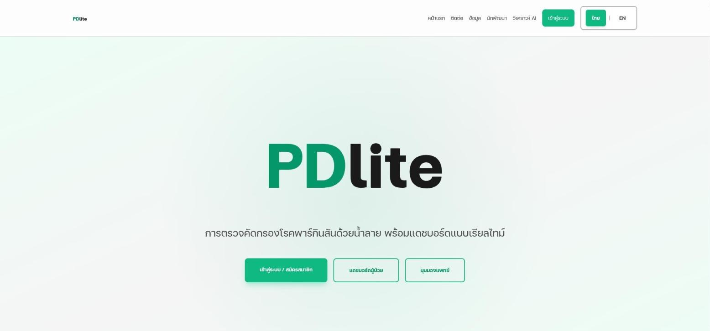<figcaption>หน้าแรกของเว็บแดชบอร์ด แยกทางเข้าผู้ป่วยและแพทย์ตั้งแต่หน้าแรก</figcaption></figure>
      <figure>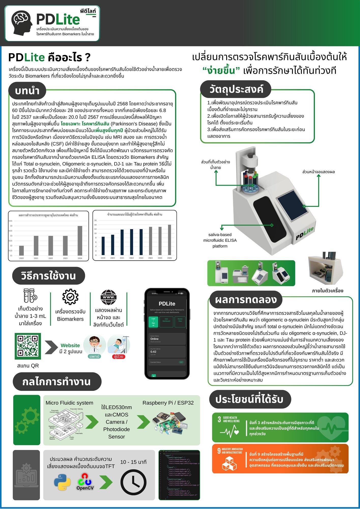<figcaption>โปสเตอร์นำเสนอผลงาน (ปิดโลโก้และรายชื่อตามกติกา)</figcaption></figure>
    </div>
    <div class="cols">
      <div class="box"><h3><span class="ico">!</span> Quest · โจทย์</h3><ul><li>ผู้ใช้หลักคือผู้สูงอายุที่ไม่ถนัดเทคโนโลยี</li><li>ผลตรวจต้องเข้าใจได้ทันที ทั้งผู้ป่วยและแพทย์</li><li>ตัวเครื่องต้องพิมพ์ 3D ได้ และใส่ชิ้นส่วนเซนเซอร์ได้พอดี</li></ul></div>
      <div class="box"><h3><span class="ico">✦</span> Moves · การตัดสินใจด้านดีไซน์</h3><ul><li>แยกมุมมองผู้ป่วยกับแพทย์ ผู้ป่วยเห็นแค่ผลที่ต้องรู้ แพทย์เห็นกราฟย้อนหลัง</li><li>ใช้สีเขียวเป็นสีหลักเพื่อให้รู้สึกปลอดภัยแบบงานสุขภาพ ตัวใหญ่ ปุ่มน้อย</li><li>ตัวเครื่องทรงเอียงให้จอหันหาผู้ใช้ ช่องใส่ตัวอย่างอยู่ด้านบนมองเห็นง่าย</li><li>โปสเตอร์เล่าเรื่องตามลำดับ ปัญหา → วิธีใช้ → กลไก → ผล อ่านจากซ้ายไปขวา</li></ul></div>
    </div>
    <div class="tools"><em>Items</em><span>Fusion 360</span><span>Figma</span><span>Next.js</span><span>Chart.js</span><span>Photoshop</span></div>
  </div>
  </article>

  <article class="case card" id="seluna" style="--accent:#9B6BFF;--accent-text:#6236D6;--tint:#E8DFEB">
    <div class="bar"><i></i><i></i><i></i><span>seluna.web</span><span class="clear">CLEAR ✓</span></div>
    <div class="in">
    <div class="case-head">
      <span class="stage">STAGE 02</span><span class="eyebrow">3D + Motion</span>
      <h2>Seluna Cloud หน้าเว็บแพลตฟอร์มร้านค้าออนไลน์</h2>
      <div class="meta"><span><b>บทบาท</b> Frontend · 3D hero · Motion</span><span><b>ปี</b> 2026</span><span><b>สถานะ</b> ใช้งานจริง</span></div>
    </div>
    <figure>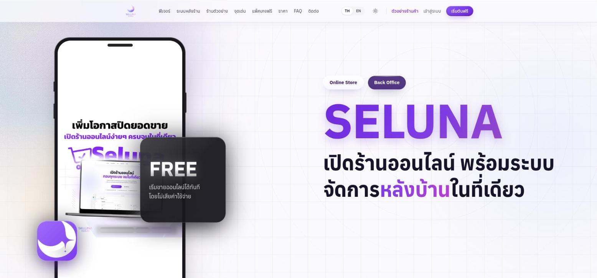<figcaption>หน้าแรกพร้อมฮีโร่ดวงจันทร์ 3D และข้อความหลักภาษาไทย</figcaption></figure>
    <div class="cols">
      <div class="box"><h3><span class="ico">!</span> Quest · โจทย์</h3><ul><li>ทำให้แพลตฟอร์มดูน่าเชื่อถือและจำได้ตั้งแต่วินาทีแรก</li><li>เอฟเฟกต์ 3D ต้องไม่ทำให้เว็บโหลดช้าหรือกระตุก</li></ul></div>
      <div class="box"><h3><span class="ico">✦</span> Moves · การตัดสินใจด้านดีไซน์</h3><ul><li>ใช้ดวงจันทร์ 3D เป็นสัญลักษณ์ของชื่อแบรนด์ และทรานซิชันแบบม่านตาพาเข้าสู่เนื้อหา</li><li>แสดงหน้าเปิดแค่ครั้งเดียวต่อการเข้าชม คนที่กลับมาไม่ต้องรอซ้ำ</li><li>วาดฮีโร่ให้เห็นก่อนโค้ดโหลดเสร็จ หน้าไม่ว่างตอนเปิด</li><li>จัดเมนูนำทางเป็นกลุ่ม ลดจำนวนตัวเลือกบนแถบด้านบน</li></ul></div>
    </div>
    <div class="tools"><em>Items</em><span>Three.js</span><span>GSAP</span><span>Next.js</span><span>Figma</span></div>
  </div>
  </article>

  <article class="case card" id="nebula" style="--accent:#4F86FF;--accent-text:#1E4FD1;--tint:#DEE2EB">
    <div class="bar"><i></i><i></i><i></i><span>nebula.web</span><span class="clear">CLEAR ✓</span></div>
    <div class="in">
    <div class="case-head">
      <span class="stage">STAGE 03</span><span class="eyebrow">Color + 3D</span>
      <h2>Nebula แผนที่กาแล็กซีของเว็บไซต์</h2>
      <div class="meta"><span><b>บทบาท</b> ผู้ร่วมพัฒนา · งาน 3D</span><span><b>ปี</b> 2026</span></div>
    </div>
    <figure>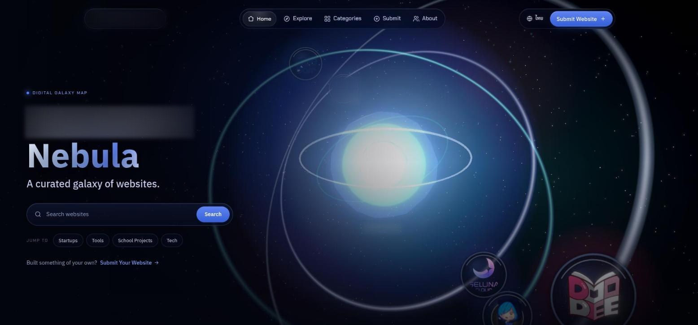<figcaption>หน้าแรกแบบโดมหอดูดาว (ชื่อองค์กรบนภาพถูกเบลอตามกติกา)</figcaption></figure>
    <div class="cols">
      <div class="box"><h3><span class="ico">!</span> Quest · โจทย์</h3><ul><li>ไดเรกทอรีรวมเว็บไซต์ที่มักหน้าตาเป็นตารางเหมือนกันหมด</li><li>ธีมอวกาศส่วนใหญ่ใช้ไล่สีม่วงน้ำเงินแบบเดิม ๆ</li></ul></div>
      <div class="box"><h3><span class="ico">✦</span> Moves · การตัดสินใจด้านดีไซน์</h3><ul><li>เล่าเป็นโดมหอดูดาวที่มองออกไปเห็นเนบิวลา เว็บแต่ละเว็บคือดาวบนแผนที่</li><li>ดึงสีจากเส้นสเปกตรัมของเนบิวลาจริง แล้วกำหนดในระบบสี OKLCH ให้ความสว่างคงที่ อ่านง่ายทุกเฉด</li><li>การส่งเว็บไซต์จบด้วยฉากหลุมดำ 3D ให้รู้สึกว่าเว็บถูกดึงเข้าไปในแผนที่</li></ul></div>
    </div>
    <div class="tools"><em>Items</em><span>React Three Fiber</span><span>OKLCH</span><span>Astro</span></div>
  </div>
  </article>

  <article class="case card" id="terminal" style="--accent:#F5BE5B;--accent-text:#8A5A00;--tint:#F5EBD2">
    <div class="bar"><i></i><i></i><i></i><span>portfolio.web</span><span class="clear">CLEAR ✓</span></div>
    <div class="in">
    <div class="case-head">
      <span class="stage">STAGE 04</span><span class="eyebrow">Visual Identity + Mascot</span>
      <h2>Portfolio Site เว็บพอร์ตโฟลิโอส่วนตัว</h2>
      <div class="meta"><span><b>บทบาท</b> ออกแบบและพัฒนาทั้งหมด · วาดมาสคอต</span><span><b>ปี</b> 2026</span></div>
    </div>
    <figure>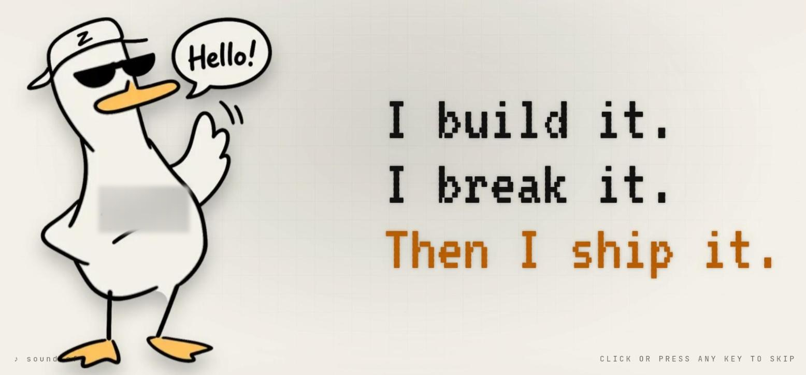<figcaption>ฉากเปิดของเว็บ มาสคอตเป็ดทักทายก่อนเข้าเนื้อหา (ชื่อแบรนด์ส่วนตัวบนตัวเป็ดถูกเบลอ)</figcaption></figure>
    <div class="cols">
      <div class="box"><h3><span class="ico">!</span> Quest · โจทย์</h3><ul><li>พอร์ตโฟลิโอทั่วไปหน้าตาเหมือนเทมเพลต จำไม่ได้</li><li>ต้องเล่าทั้งสายงานสร้างเว็บและสาย Cyber Security ในประโยคเดียว</li></ul></div>
      <div class="box"><h3><span class="ico">✦</span> Moves · การตัดสินใจด้านดีไซน์</h3><ul><li>วาดมาสคอตเป็ดลายเส้นมือเอง ให้เว็บมีบุคลิกเป็นกันเอง ใช้ซ้ำทั้งในเว็บ สติกเกอร์ และงานกราฟิก</li><li>สรุปตัวตนเป็นสามบรรทัด สร้าง เจาะ และส่งมอบ ใช้ฟอนต์พิกเซลแบบเทอร์มินัล และเน้นบรรทัดสุดท้ายด้วยสีส้มสีเดียว</li><li>พื้นสีครีมกับกริดจาง ๆ ให้ความรู้สึกเหมือนสมุดสเก็ตช์ ตัดกับฟอนต์เทอร์มินัล</li></ul></div>
    </div>
    <div class="tools"><em>Items</em><span>Illustration</span><span>WebGL</span><span>Next.js</span><span>Motion</span></div>
  </div>
  </article>

  <article class="case card" id="tgoda" style="--accent:#3AA8FF;--accent-text:#0B5FA8;--tint:#DBE7EB">
    <div class="bar"><i></i><i></i><i></i><span>t-goda.web</span><span class="clear">CLEAR ✓</span></div>
    <div class="in">
    <div class="case-head">
      <span class="stage">STAGE 05</span><span class="eyebrow">UI + Responsive</span>
      <h2>T-Goda เว็บจองที่พักและเที่ยวบิน</h2>
      <div class="meta"><span><b>บทบาท</b> ออกแบบและพัฒนาฟรอนต์เอนด์ทั้งหมด</span><span><b>ปี</b> 2026</span><span><b>งานแข่งขันพัฒนาเว็บ</b> รอบคัดเลือก</span></div>
    </div>
    <figure>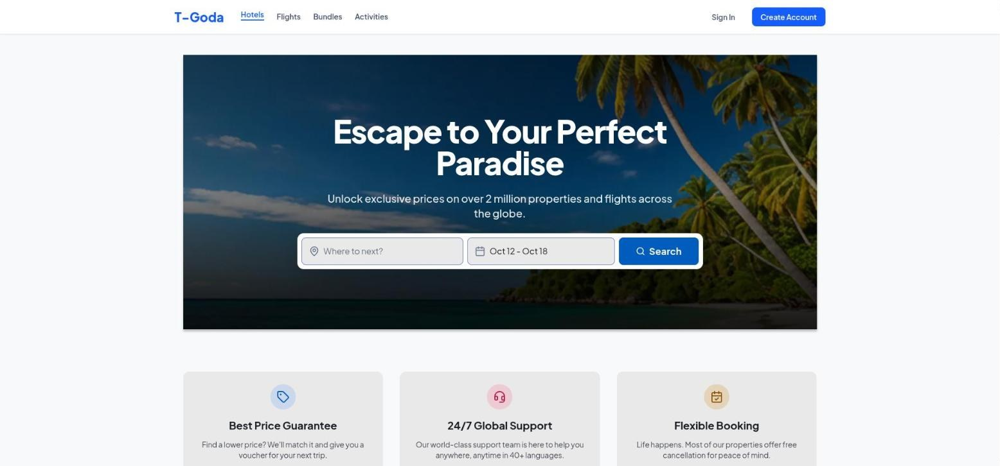<figcaption>หน้าแรกที่ให้กล่องค้นหาเป็นจุดเด่นที่สุด</figcaption></figure>
    <div class="cols">
      <div class="box"><h3><span class="ico">!</span> Quest · โจทย์</h3><ul><li>ทำเว็บแบบ Agoda ให้ครบหลายหน้าในเวลาแข่งขันที่จำกัด</li><li>ต้องใช้งานได้ดีทั้งจอคอมและมือถือ</li></ul></div>
      <div class="box"><h3><span class="ico">✦</span> Moves · การตัดสินใจด้านดีไซน์</h3><ul><li>กล่องค้นหาเป็นสิ่งแรกที่เห็น เพราะเป็นงานหลักของผู้ใช้ ภาพพื้นหลังช่วยสร้างอารมณ์อยากเที่ยว</li><li>แถบนำทางเดียวกันทุกหน้า แยกโรงแรม เที่ยวบิน แพ็กเกจ และกิจกรรม</li><li>เลย์เอาต์ยืดหยุ่นตามจอ การ์ดเรียงใหม่เป็นคอลัมน์เดียวบนมือถือ</li></ul></div>
    </div>
    <div class="tools"><em>Items</em><span>Figma</span><span>Responsive layout</span><span>Frontend</span></div>
  </div>
  </article>

  <article class="case card" id="nexus" style="--accent:#FF4F8B;--accent-text:#B3164F;--tint:#F5DBDC">
    <div class="bar"><i></i><i></i><i></i><span>nexus.web</span><span class="clear">CLEAR ✓</span></div>
    <div class="in">
    <div class="case-head">
      <span class="stage">STAGE 06</span><span class="eyebrow">Web App UI</span>
      <h2>Nexus เว็บแอปแชตสำหรับชุมชน</h2>
      <div class="meta"><span><b>บทบาท</b> หน้าแลนดิง · ระบบสมัครและล็อกอิน · ฟังก์ชันหลัก</span><span><b>ปี</b> 2026</span><span><b>งานแข่งขันพัฒนาเว็บ</b> รอบชิง อันดับ 3 ระดับประเทศ</span></div>
    </div>
    <figure>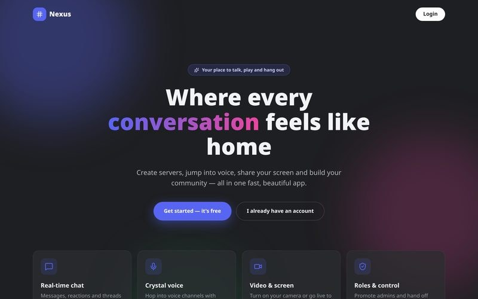<figcaption>หน้าแลนดิงที่บอกฟีเจอร์หลักในการ์ดสี่ใบ</figcaption></figure>
    <div class="cols">
      <div class="box"><h3><span class="ico">!</span> Quest · โจทย์</h3><ul><li>แอปแชตแบบ Discord มีฟีเจอร์เยอะมาก ผู้ใช้ใหม่ต้องเข้าใจได้ในหน้าเดียว</li><li>ขั้นตอนสมัครต้องสั้นที่สุด</li></ul></div>
      <div class="box"><h3><span class="ico">✦</span> Moves · การตัดสินใจด้านดีไซน์</h3><ul><li>หัวข้อเน้นความรู้สึก "เหมือนอยู่บ้าน" แทนการไล่รายการฟีเจอร์</li><li>ปุ่มหลักสองปุ่มชัดเจน เริ่มใช้ฟรี กับมีบัญชีแล้ว</li><li>สรุปฟีเจอร์เป็นการ์ดสี่ใบ แชต เสียง วิดีโอ และการจัดการสิทธิ์</li></ul></div>
    </div>
    <div class="tools"><em>Items</em><span>Figma</span><span>Auth flow</span><span>Frontend</span></div>
  </div>
  </article>

  <section class="gallery card" id="graphics" aria-labelledby="graphics-title" style="--accent:#FF7A3D;--accent-text:#B2440F;--tint:#F5E1D2">
    <div class="bar"><i></i><i></i><i></i><span>graphics/ (canva)</span><span class="clear">15 LOOT</span></div>
    <div class="in">
    <div class="case-head">
      <span class="stage">BONUS</span><span class="eyebrow">Graphic Design (Canva)</span>
      <h2 id="graphics-title">งานกราฟิก แบรนด์ และสื่อโซเชียล</h2>
      <p class="lede">งานที่ออกแบบใน Canva ทั้งสื่อโซเชียลของแพลตฟอร์มจริง แพ็กเกจจิ้งสินค้า เสื้อผ้า และกราฟิกประกอบโปรเจกต์ ภาพที่มีรูปบุคคล โลโก้สถาบัน หรือช่องทางติดต่อถูกตัดหรือเบลอไว้</p>
    </div>
    <div class="group">
      <h3>แบรนด์และสื่อโซเชียล</h3>
      <p>ชุดโพสต์ของ Doodee Future แพลตฟอร์มเตรียมสอบเข้ามหาวิทยาลัย ใช้ชมพูเป็นสีหลักกับมาสคอตแมวอ่านหนังสือเพื่อให้ทุกโพสต์จำได้ทันทีในฟีด รวมถึงงานเปิดตัวแบรนด์อื่น ๆ</p>
      <div class="tiles">
        <figure>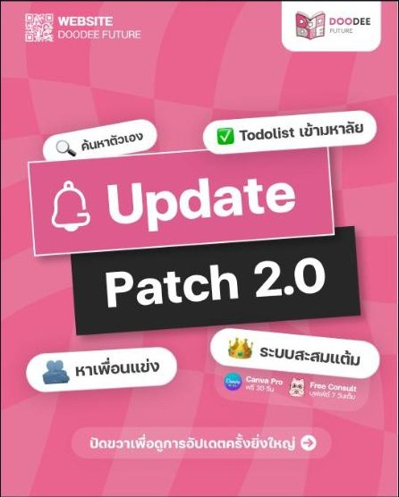<figcaption>โพสต์ประกาศอัปเดต Patch 2.0 (4:5)</figcaption></figure>
        <figure>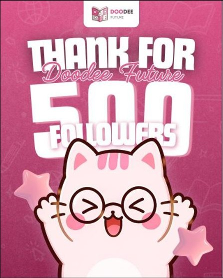<figcaption>โพสต์ฉลองผู้ติดตาม 500 คน</figcaption></figure>
        <figure>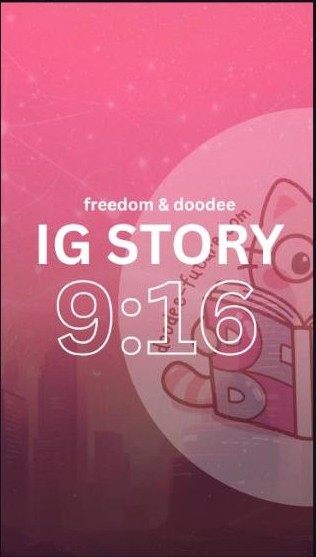<figcaption>เทมเพลต IG Story 9:16</figcaption></figure>
        <figure class="wide">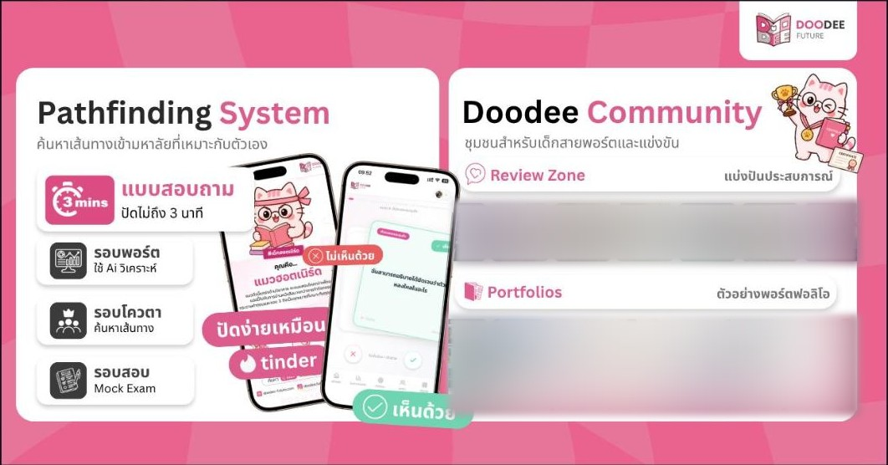<figcaption>กราฟิกโฆษณาฟีเจอร์หลักของแพลตฟอร์ม</figcaption></figure>
        <figure class="wide">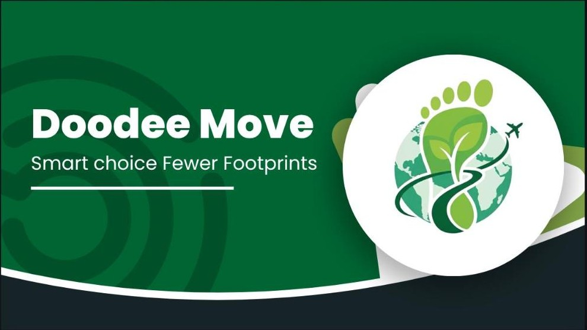<figcaption>Doodee Move สไลด์เปิดโปรเจกต์ลดคาร์บอน</figcaption></figure>
        <figure>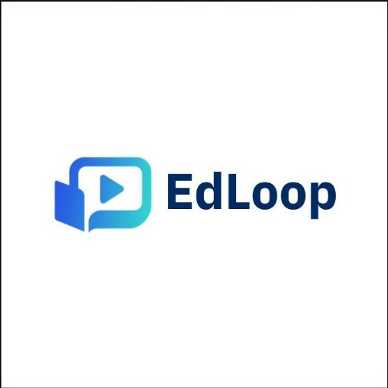<figcaption>โลโก้และชุด PR ของ EdLoop</figcaption></figure>
      </div>
    </div>
    <div class="group">
      <h3>แพ็กเกจจิ้ง สินค้า และเสื้อผ้า</h3>
      <p>ออกแบบตัวตนสินค้าตั้งแต่โลโก้ไปจนถึงหน้าบรรจุภัณฑ์ แต่ละรสใช้สีของวัตถุดิบเป็นสีหลัก ให้แยกรสได้จากระยะไกล</p>
      <div class="tiles">
        <figure class="wide">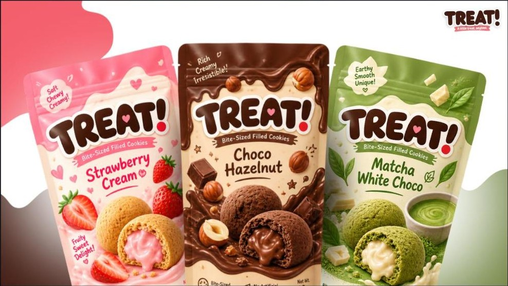<figcaption>TREAT! แพ็กเกจคุกกี้สามรส</figcaption></figure>
        <figure class="wide">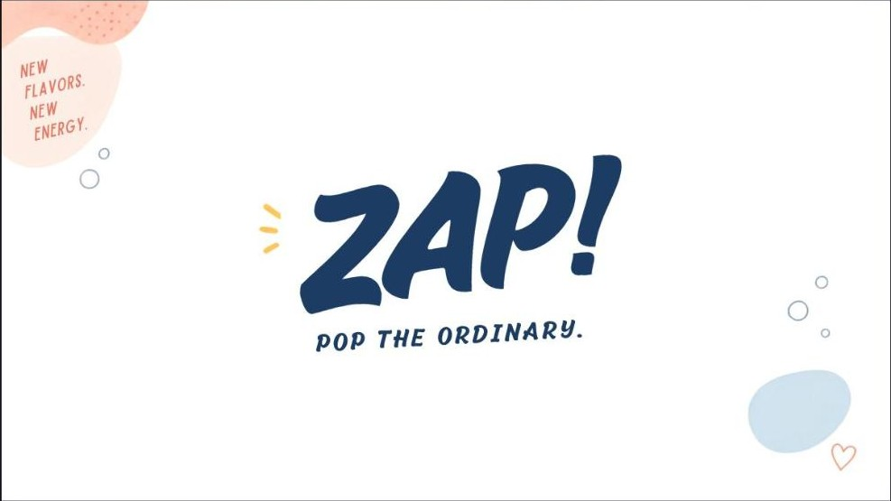<figcaption>ZAP! โลโก้เครื่องดื่ม</figcaption></figure>
        <figure class="wide">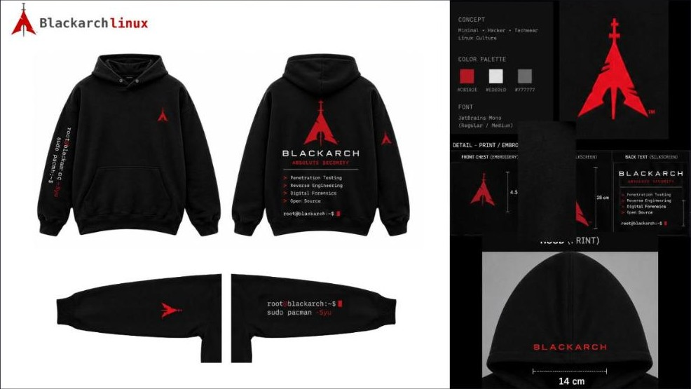<figcaption>ฮู้ดดี้ธีม Linux พร้อมสเปกงานพิมพ์และงานปัก</figcaption></figure>
        <figure>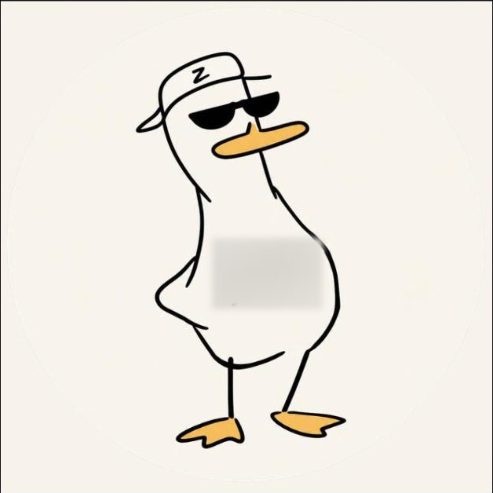<figcaption>มาสคอตเป็ด วาดเอง (ชื่อแบรนด์ถูกเบลอ)</figcaption></figure>
        <figure>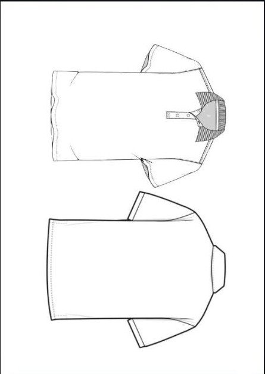<figcaption>เทมเพลตแบบเสื้อ</figcaption></figure>
      </div>
    </div>
    <div class="group">
      <h3>กราฟิกประกอบโปรเจกต์</h3>
      <p>สไลด์ อินโฟกราฟิก และภาพโปรโมตที่ใช้นำเสนอโปรเจกต์ เน้นให้คนเข้าใจขั้นตอนในภาพเดียว</p>
      <div class="tiles">
        <figure>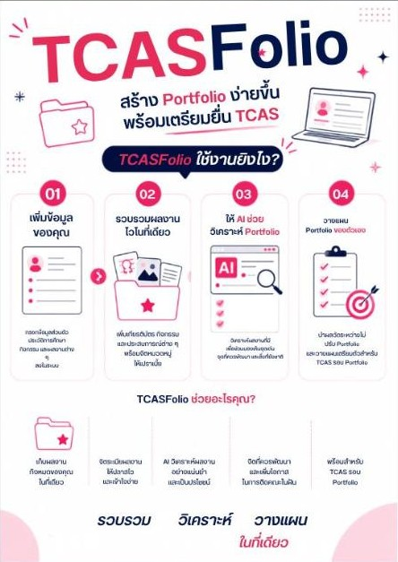<figcaption>อินโฟกราฟิก TCASFolio ใช้งานยังไงใน 4 ขั้น</figcaption></figure>
        <figure class="wide">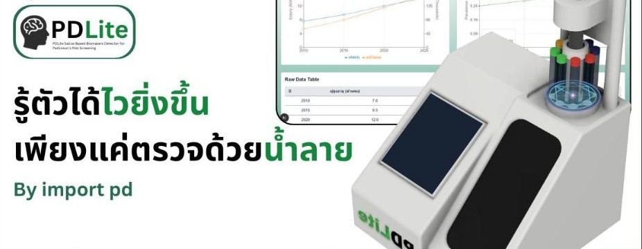<figcaption>สไลด์เปิดนำเสนอ PDLite (ตัดโลโก้และรูปทีมออก)</figcaption></figure>
        <figure class="wide">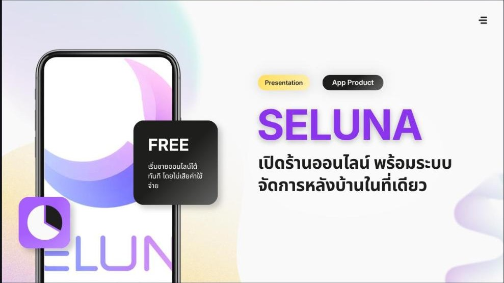<figcaption>ภาพโปรโมตแอป Seluna</figcaption></figure>
        <figure class="wide">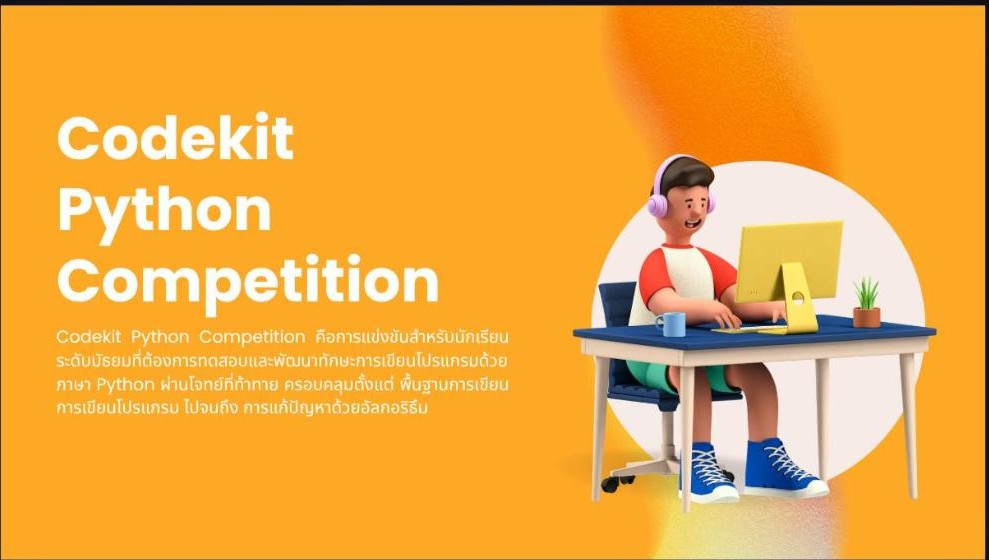<figcaption>สไลด์เปิดงานแข่งขัน Python</figcaption></figure>
      </div>
    </div>
  </div>
  </section>

  <p class="note">พอร์ตนี้ตัดข้อมูลส่วนตัวออกทั้งหมดตามกติกาการสมัคร รวมถึงชื่อ รูป สถาบัน องค์กร และช่องทางติดต่อ ภาพที่มีข้อมูลเหล่านี้ถูกปิดหรือเบลอไว้</p>
  <footer><span class="go">THANKS FOR PLAYING!</span><span>&gt; end of file · 2026 <span class="cursor" aria-hidden="true"></span></span></footer>
</main>
